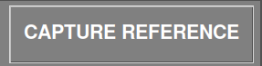
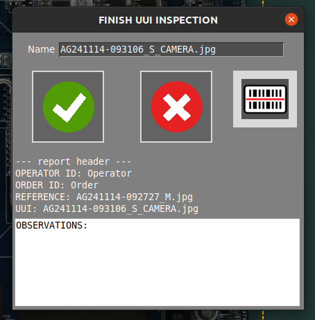
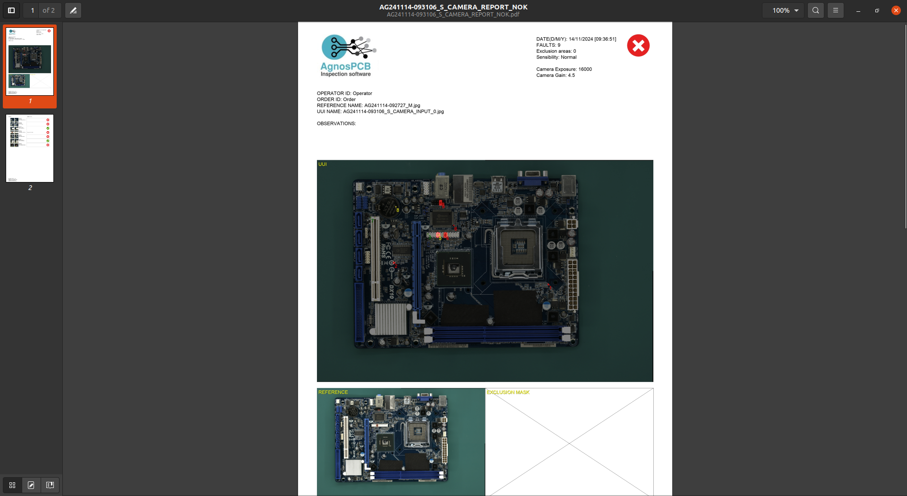

Flujo de trabajo de inspección
Lanzamiento del software
- Conecte la fuente de alimentación a la plataforma de inspección en el panel trasero
- Encienda el monitor
- Conecte la fuente de alimentación al ordenador y enciéndalo
- Una vez que el sistema haya arrancado, abra la aplicación haciendo doble clic en el icono del escritorio
- Solo para unidades ONLINE: aparecerá una ventana de inicio de sesión pidiendo sus credenciales de cuenta de AgnosPCB. Las credenciales se almacenarán en la unidad para uso futuro y no requerirá iniciar sesión de nuevo.

Procedimiento de inspección
Generación de una REFERENCIA
El software de la herramienta de inspección AgnosPCB "comparará" la fotografía de su circuito/panel de REFERENCIA ("muestra dorada") con todas las fotos que tome del circuito a inspeccionar (fotos para "ANALIZAR").
Importante
Le recomendamos visitar nuestra sección de consejos antes de tomar su primera imagen.
Para proceder con la toma de la REFERENCIA, haga clic en el icono de referencia en el menú principal:

Aparecerá una nueva ventana con múltiples herramientas:

En esta ventana tenemos que configurar las imágenes necesarias para cubrir toda la PCBA.

En caso de que no pueda determinar cuántas imágenes se necesitan para cubrir su PCBA/panel, puede colocar su PCBA/panel en el medio del área de inspección y presionar el botón AUTO. El sistema escaneará la PCBA/el panel y establecerá automáticamente las proporciones óptimas.

En la parte inferior de la ventana puede establecer/desactivar la cuadrícula en la vista previa en vivo y configurar la exposición para tomar la imagen.

Importante
El valor predeterminado (16000) establecido es el valor óptimo en la mayoría de los casos. Ajuste este parámetro solo en caso de componentes muy claros/oscuros que sean difícilmente visibles para el software.
Esta ventana permite mover la cámara a cualquier cuadrante de la PCBA. Simplemente haga clic en el cuadrante deseado en la miniatura.

La cámara enfocará el área seleccionada una vez que haya comenzado la captura.
Importante
Para un enfoque adecuado, seleccione un área sin componentes altos.
También es posible enfocar la óptica antes de comenzar la captura presionando el botón FOCUS. Esto ayuda a encontrar un área donde la óptica enfoque correctamente.

Para iniciar el procesamiento de la captura, simplemente haga clic en el botón CAPTURAR REFERENCIA. El AOI foca automáticamente en el cuadrante seleccionado y comienza a capturar toda la PCBA en cuestión de segundos.


Después de capturar la PCBA, aparecerá la ventana de mosaico que permite almacenar la imagen para un uso rápido.
Nota
Todas las REFERENCIAS tomadas se almacenarán automáticamente. El mosaico ayuda a cargar rápidamente las REFERENCIAS más utilizadas.

Una vez que el proceso de captura haya finalizado, la imagen de REFERENCIA se mostrará en la ventana principal y le permitirá establecer máscara de exclusión o dibujar un área de código de barras para la lectura.

Capturando una UUI
Después de generar o cargar una imagen de REFERENCIA previa, podemos proceder con la captura de la imagen UUI (Unidad Bajo Inspección) presionando el botón.

Aparecerá una ventana de vista previa en vivo que muestra una imagen fantasma de la imagen de REFERENCIA. Esto ayuda a alinear la PCBA UUI con la REFERENCIA.
Importante
El software AgnosPCB es capaz de alinear ambas imágenes (REFERENCIA y UUI) automáticamente. Sin embargo, es importante posicionar la PCBA UUI correctamente para evitar deformaciones geométricas que puedan causar detecciones de falsos positivos.

El proceso de captura comenzará haciendo clic en el botón INICIAR INSPECCIÓN.
Nota
No es necesario enfocar, ya que el parámetro de enfoque ya está almacenado con la imagen de REFERENCIA, lo que hace que la inspección sea realmente rápida.
El proceso de inspección se ejecutará en paralelo en caso de una inspección de múltiples imágenes.
Una vez que el proceso de captura haya finalizado, se devolverá el resultado final mostrando los errores detectados si los hay. Es posible cambiar la sensibilidad de detección presionando el botón en la ventana principal o presionando la tecla 1, 2 o 3.


Si se detectan errores, aparecerá un marco rojo alrededor de la ventana principal. Marco verde si no hay errores.
Reporte de errores
Una vez que la inspección ha finalizado, el operador debe supervisar los errores marcados, clasificándolos como error real o detección de falso positivo. Para hacer esto, simplemente desplácese por los errores usando las flechas izquierda y derecha en el teclado.
Para marcar un error real, simplemente muévase a la falla y presione la flecha arriba en su teclado. Aparecerá una nueva ventana que muestra el error en detalle y le permite categorizarlo seleccionando un tipo de falla de la lista.

Además, hay un campo vacío para agregar un comentario.
En caso de que el operador encuentre un error no detectado por el software, es posible marcarlo y reportarlo moviendo el cursor al área de la falla y presionando la tecla flecha arriba. La ventana de reporte aparecerá como de costumbre.
Cuando el software marca un área que no es un error real, el operador puede marcarla como falso positivo presionando la tecla flecha abajo. También aparecerá una ventana que permite agregar un comentario.

Nota
Tenga en cuenta que el icono rojo  marca las fallas reales y el icono verde
marca las fallas reales y el icono verde  las fallas de falso positivo.
las fallas de falso positivo.
Generación de un informe PDF final
Una vez que el reporte ha finalizado, el operador puede generar un informe PDF final presionando el siguiente botón:

Aparece una ventana que le permite marcar la inspección como OK o NO OK. Si la PCBA pasa el control de calidad con éxito, presione el icono verde.

Es posible agregar comentarios que se incluirán en el informe. El PDF se generará en la carpeta REPORTS.
